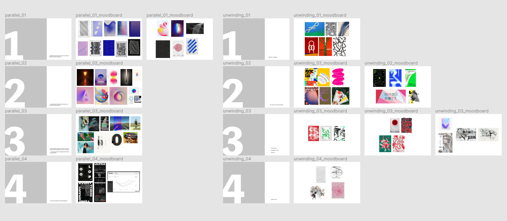
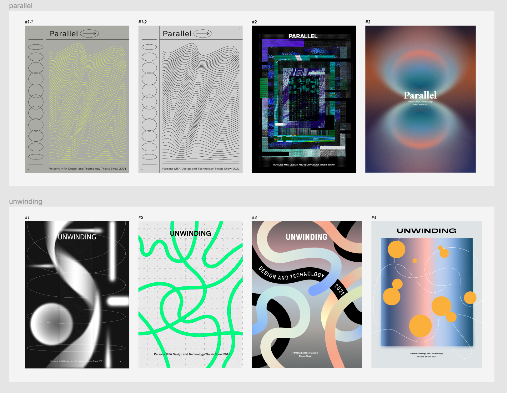
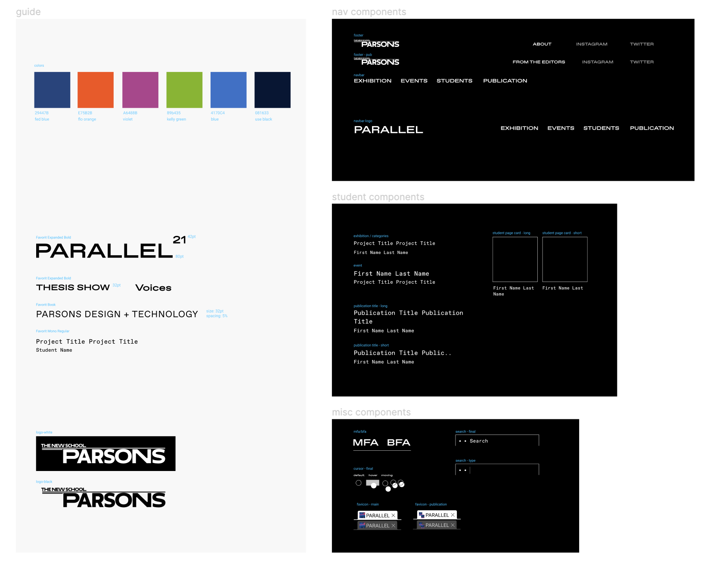

I was the design lead for the branding and UI/UX of the thesis exhibition website for the 2021 graduating classes of Parsons MFA & BFA Design and Technology. You can visit the full website here.


PROCESS
// INITIAL ITERATIONS
Our work began with a survey of potential show titles. After collecting feedback from our cohort, we started developing the show's visual identity around two potential show titles: PARALLEL and UNWINDING. After creating a series of visual identity samples, we asked our cohort to vote for their favorite and came to an agreement with PARALLEL design #2.
 
// BRANDING
We focused the branding on the glitch aesthetic as it spoke to our shared experiences as a collective of students operating in a remote setting. The two-column layout was created to further embody the concept of 'parallel' in our design. We created a guideline by narrowing down on the conceptual direction, typeface options, and color palette. The guideline was used by the publication, promo, and symposium teams for their respective assets.

// MOCKUPS
After creating the visual identity of the show, we produced the desktop & mobile UI and UX mockups for web development. The full website can be found on parsons.edu/dt.
This project was created in collaboration with Benny Zhang, Taylor Su, and Yichan Wang with guidance from Richard The and Xin Xin. The website was developed by Dylan Fisher